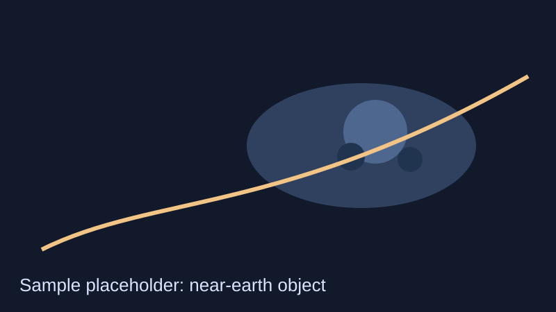

Discovery detail
Sample entry (placeholder)Near-Earth Object Tracklet 2026-02-21
Linked detections indicate a possible fast-moving object requiring orbit refinement and external follow-up.

Why it matters
Fast-moving candidate workflows can shorten hand-off time to global follow-up networks, improving orbital confidence.
What you are seeing
This scaffold page demonstrates a reusable discovery detail structure with clear metadata and accessible reading order.
All scientific values remain placeholders. Do not cite them as real observational output.
Follow-up notes
Placeholder workflow: rerun linkage against adjacent-night data, prioritise candidate ranking, and request independent confirmation imaging.
In a live implementation, add uncertainty ellipses, ephemeris updates, and observatory attribution metadata.